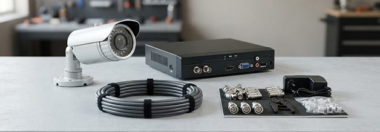

SISTEMA ANALÓGICO
Aprovecha una base conocida.
Una opción para instalaciones con cableado coaxial o proyectos que buscan una arquitectura directa con grabación centralizada en DVR.
- Revisión del cableado y compatibilidad existente
- Montaje de cámaras y conexión al grabador
- Ajuste de imagen, grabación y visualización